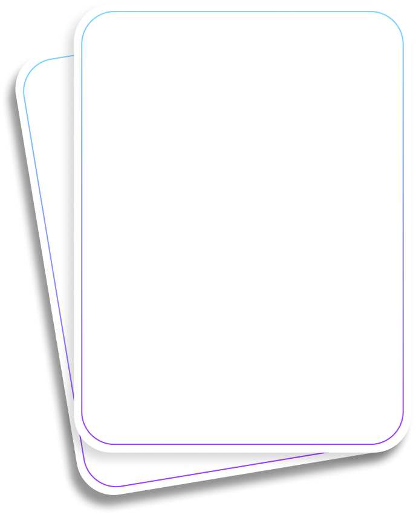

같은 시간 안에
같은 시간 안에
40% 더 암기하도록
Spaced learning을 통한 암기력 향상
간세포 손상 시
혈중에서 상승하는 대표 효소는?
혈중에서 상승하는 대표 효소는?
‘재량행위’와
‘기속행위'의 차이는?
‘기속행위'의 차이는?
행정행위의 하자는
몇 가지로 나뉘는가?
몇 가지로 나뉘는가?
‘although’와
‘despite’의 차이는?
‘despite’의 차이는?
형법상 고의는 결과 발생에 대한
‘OO’과 ‘OO’으로 구성된다
‘OO’과 ‘OO’으로 구성된다
‘재량행위’와
‘기속행위'의 차이는?
‘기속행위'의 차이는?
인권 침해로 인한
제도적 구제 절차에 대해 설명하시오
제도적 구제 절차에 대해 설명하시오
행정기관이 국민에게
일정 권리나 이익을 부여하는 행위는?
일정 권리나 이익을 부여하는 행위는?
간접도 손실 시
활용에서 상충하는 대표 요소는?
활용에서 상충하는 대표 요소는?
1920년대 무장 독립운동의
대표적 단체는?
대표적 단체는?
고려의 최고 교육 기관은?
인슐린 결핍으로 인해
케톤체가 과다하게 생성되어
발생하는 대사성 질환은?
케톤체가 과다하게 생성되어
발생하는 대사성 질환은?